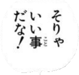

Original

Image Processing
| binarization: | erosion: |
|---|---|
 |
Contours
| all: | pruned: | innermost: | level 2: | bubbles: |
|---|---|---|---|---|
 |
 |
Bubbles
| Bubble | Bubble Contents | Remove Furigana | OCR (horizontal) | OCR (vertical) | Text | Translated |
|---|---|---|---|---|---|---|
シャンクス | Shanks | |||||
 | なんだ | it is assuredly that ... | ||||
そうだな ァ もう にの村を。 1年以上 拠点に たつからな 旅をして | Yes, I'm already in the village. I've been based here for over a year, traveling from Tatakana. | |||||
あと 2・3回 かァ… | Two or three more times... | |||||
 | あと2・3回 航海したら この村を離れて ずっと北へ向か おうと思ってる | After a couple more voyages, I'm thinking of leaving this village and heading all the way north. | ||||
 |  | おれ それまでに 泳きの練習 するよ/ | I'll practice swimming before then. | |||
|  | そりゃ いい事 だな/ | That's a good thing. | ||||
勝手に がんばれ | Go for it on your own. |